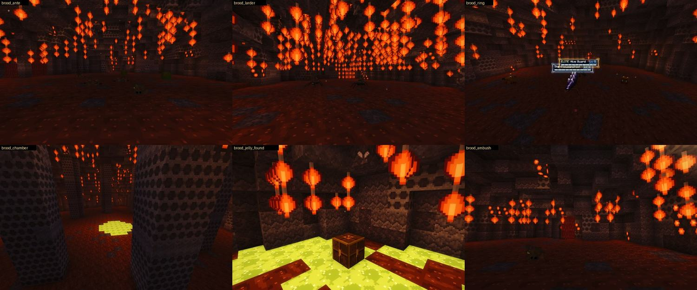
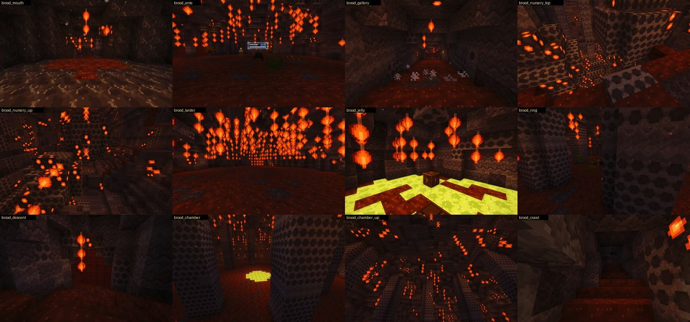
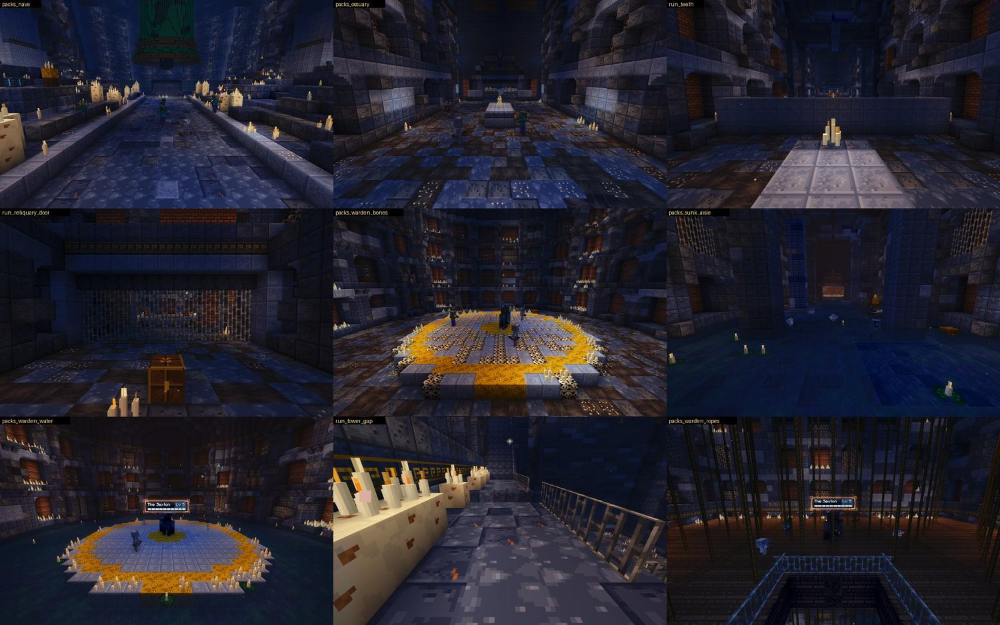
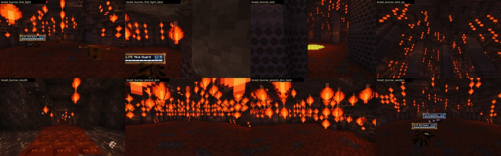
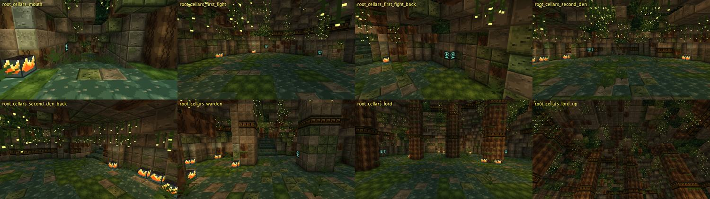
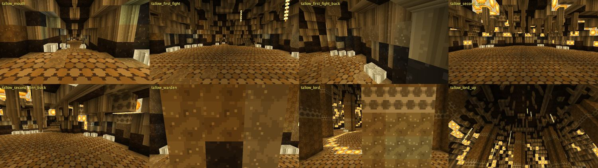
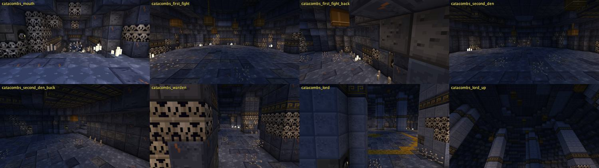
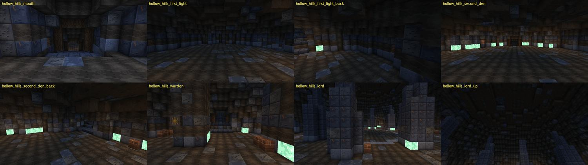

AWAKEN · Gates as Worlds · built 10 Nov 2026 · not yet played
While you were out I built the plan you approved and went past it. There are seven gates you can walk into by command. Two were made by hand. Five are rolled from a seed, so each one is a different dungeon every time. Nothing here has been played by a person yet. You are the first.
Branch claude/gates-as-worlds-plan-fcb81b, commit 8f594cad8, pushed. All 46 gate tests pass. It is not in your play copy until that branch is merged. The new gates stay behind their switch, so the old gates are untouched.
Play
Stand anywhere in the overworld and type the command. Play in survival: packs ignore a creative player and an ambush will not spring. For the five rolled gates, change the number at the end to get a different layout. /awaken gate leave takes you out.
| Gate | Command | How far it is proven |
|---|---|---|
| The Hour Crypt The crypt you know, now a run of 16 legs | /awaken gate realm_enter E awaken:hour_crypt | seen in the real game |
| The Broodwarren A short crawl built by hand, fifty blocks down | /awaken gate realm_enter E awaken:broodwarren | seen in the real game |
| The Lower Combs A brood nest, different on every seed | /awaken gate realm_enter E awaken:brood_burrow 1 | seen in the real game |
| The Bone Roads Catacombs, different on every seed | /awaken gate realm_enter E awaken:catacombs 1 | checker pictures only |
| The Hollow Hills Barrow passages, different on every seed | /awaken gate realm_enter E awaken:hollow_hills 1 | checker pictures only |
| The Root Cellars A temple undercroft, different on every seed | /awaken gate realm_enter E awaken:root_cellars 1 | checker pictures only |
| The Tallow Runs Wax runs, different on every seed | /awaken gate realm_enter E awaken:tallow_runs 1 | checker pictures only |
What changed
Built by hand
A nest dug down under a dead tree. Antechamber, a gallery of spitting cells, a shaft of hanging comb with a broken ledge, a larder whose sacs burst round you, the comb ring, the brood chamber. It has its own block family: grey nest paper, comb with something lit inside, hanging sacs, a red skin that grows over a door.


Built by hand
The nave, then the walk round the pit, then three wings in any order. East through the stone teeth to the Ossuary and its Warden. West down into the water. South up the tower, whose stair is now broken in three places. Off the Ossuary there is a reliquary whose door stands open only while the bell rings, with Hushlings in the dark in front of it. Kill the Warden among the ropes and a bell rope comes down from the bridge, so you never climb the tower twice.

The Crypt still looks flatter and bluer than its painting. This work was about play. That look fault is still open.
Not one by one
You asked not to build these one at a time. So there is now a generator. It rolls a whole run from the gate's seed: a fight in sight of the way in, then two to five things out of a bag (more fights, a spitter gallery, a hall of teeth, a shaft with a broken ledge, an ambush), then the Warden, then the Lord. It turns as it goes and it goes down. There is always a side cell that makes a way round, and usually a hidden cell.
A skin decides what the dungeon is made of and who lives there. A skin is one file. I wrote two. Then I gave three builders a thirty-line brief each, and each came back with a working skin in ten to twenty minutes. Every skin is tested on six seeds: nothing floats, every place can be walked to, every fight has room.





These rolled dungeons are plainer than a gate built from a painting. I mean them as the short gates in the mix, three in ten, beside the great ones.
Straight
A real-game walk showed that packs I had named by monster were not spawning those monsters. They fell back to a random pick. The tests had not caught it. It is fixed and there is a test for it now.
Yours to decide
Play notes with every command and what to look for are in the branch at docs/gates-as-worlds/the-run/PLAY.md.